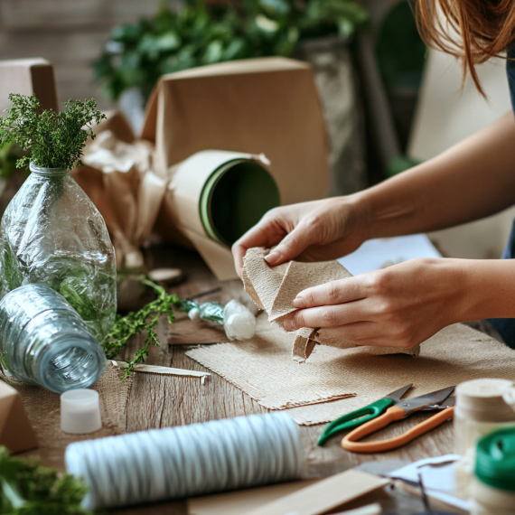
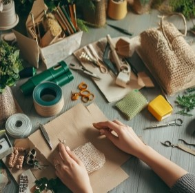

Resources for Sustainable Practices and Economic Empowerment
At Green Equality, we aim to provide women with practical resources to help them improve their economic situation through sustainable practices. Below are examples of potential tutorials and guides that can inspire women to create eco-friendly products, start small businesses, and contribute to climate resilience.
 
Example Tutorials for Sustainable Product Creation
-
Upcycling Everyday Materials: One example could be a tutorial that teaches women how to turn old clothes or plastic bottles into useful, sellable items like handbags, home decor, or even furniture. This type of resource would demonstrate easy-to-follow steps for transforming waste into products that can be sold locally or online.
-
Making Natural Cosmetics: Imagine a guide that helps women create natural skincare products using ingredients like coconut oil, herbs, and essential oils. These eco-friendly alternatives to commercial products could be marketed within their communities or through small online shops, helping reduce reliance on harmful chemicals while generating income.
-
Sustainable Farming Techniques: Consider tutorials that provide women with sustainable agriculture methods, such as rainwater harvesting or organic gardening. These could show women how to grow their own crops sustainably, offering both food security and opportunities to sell produce in local markets.
Economic Skills Development Examples
-
Business Basics Workshop: An example of a workshop could teach the fundamentals of starting a business, from registering a business name to creating a simple business plan. These resources would focus on helping women understand how to budget, market, and scale their ventures, especially in small-scale, sustainable industries.
-
Microfinance Access and Guidance: There could be illustrative guides on how women can access microfinance loans to help kick-start their small businesses. These examples would show how to apply for microloans and explain how small investments can lead to sustainable, long-term income.
-
Connecting to Fair Trade Markets: One example of support could be resources that teach women how to connect with fair trade markets or cooperatives. These examples would help women find buyers for their sustainable products, ensuring fair compensation and access to global or regional markets.
Example Community Workshops and Events
-
Collaborative Workshops: Green Equality could organize mock examples of community workshops where women gather to share experiences and learn new sustainable practices, like making eco-friendly household products or setting up community gardens. These workshops would also provide networking opportunities to build strong, supportive networks within and between communities.